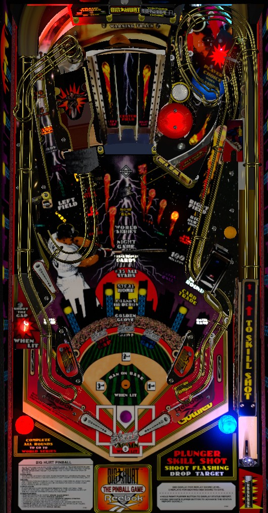

Scoring on Frank Thomas Big Hurt is dominated by left orbit combos. Shooting the Left Field orbit repeatedly without missing scores increasing points up to a maximum of 1,000,000,000 per shot, which far overshadows everything else in the game. If the left orbit is for any reason unviable (such as the return feed not being able to be easily trapped on the right flipper), shoot the lower right hole to start modes when lit, and shoot flashing shots during modes. Relight the hole for a mode start by shooting the moving Glove target. Shoot the Card and Trade standups to light Card Trade at the lower right hole, which lets you cash in Cards earned around the game for major scores including super jackpots.
The below picture of Frank Thomas Big Hurt's playfield was taken from the VPX recreation by LoadedWeapon et al.

A plunged ball will be dropped on top of the drop target structure and be lowered to the playfield via a feeder habitrail. This will direct ball straight at the upper left flipper. One drop target will be up; shoot that drop target within 5 seconds and before hitting any other switch in the game to score a Home Run. This scores 10,000,000 points, or 40,000,000 if the bases were loaded. Bases and runs are described in more detail later in the guide.
The Left Field orbit on the left is the most lucrative shot in the game if you're good at it. During single ball non-mode play, this orbit is lit for 500,000 points. Making this orbit when a number value is lit scores the currently lit or flashing value and causes the next higher value to flash instead. Values are 500,000, then 5,000,000, then 50,000,000, then 500,000,000, then ? Million, which is actually 1,000,000,000 points. You can keep collecting the 1,000,000,000 value by making repeated shots without missing. If more than 6 seconds pass between orbit shots, or if another major shot in the game is made instead, the orbit value resets back to 500,000 points.
A full shot to the Left Field orbit comes down the entrance to the Right Field orbit and toward the right flipper in front of the slingshot. On a game with Gottlieb's original "catch-all" style flippers, the friction of the flipper rubber and high angle of a raised flipper should make it relatively easy to get control of the ball, at which a new orbit shot can be lined up. If you can repeatedly get a left orbit award sequence built up, there's no reason to play for any other features on Frank Thomas Big Hurt.
The currently flashing mode is started by shooting the hole in the lower right when it is lit for Begin Round. If it is not lit, shoot the moving Glove at the top of the center ramp to light it. Begin Round is lit at the start of each ball. Slingshots rotate which mode is flashing to be played next. Modes cannot be started while any other mode or multiball is running. The 6 main modes are:
On easiest settings, a 4th ball will be added to the playfield for making a second flashing shot during any of the multiball modes (Night Game, Frank Thomas Cards, Frank's HR Derby, and Golden Glove).
After playing all 6 modes- in any order, and regardless of how well you did- the 7th mode played is World Series wizard mode. This is a single-ball wizard mode timed to 30 seconds. The two orbits and the Left and Right Gap shots each score 30,000,000 points. After making all 4 in any order, the Home Run hole behind the Glove is lit for a Super Jackpot, worth up to 900,000,000 points. If time runs out, if the ball drains, or if the Super Jackpot is collected, the mode progress is reset, and all 6 main modes must be played again to earn another shot at World Series.
When no mode or multiball is running, shooting the Left Gap awards one Inning and lights the Right Gap for another Inning. You can go back and forth this way until you miss. Innings can also be earned by making any flashing shot during Night Game mode or as a Bullpen mystery award. The Super Jackpot starts each game at 100,000,000 points; each Inning collected adds 100,000,000 to the Super Jackpot, up to a maximum of 900,000,000 points for collecting 8 Innings. Completing 6 Innings starts 7 Inning Stretch, a 4-ball multiball where the left orbit adds 10,000,000 points to the regular jackpot value and shots to the right orbit or Home Run hole add a letter in Big Hurt (spelling Big Hurt scores a double jackpot). After maxing out the Super Jackpot at 900,000,000 points, any further Inning advances score an instant 30,000,000.
When no mode or multiball is running and the Left Gap was not the most recent made shot, the Right Gap scores Player's Choice. Use the flippers to choose one of two awards. The left flipper always adds 2 letters to the word Grand Slam. The right flipper can offer any of the following awards: standard multiball, Advance 2 Innings, light Double, or Hurry-Up Extra Ball. Player's Choice will keep offering the same award on the right flipper until you take it, so you can't just always pick the 2 letters to cycle to what you want. The hurry-up extra ball is lit at the left orbit.
In addition to Player's Choice, letters in Grand Slam can also be earned by hitting the scoreboard panel targets, which are above the Left and Right Gap entrances and can usually only be hit when the center ramp is raised. Spelling Grand Slam instantly starts Grand Slam Derby, a 4-ball multiball where all shots to the Home Run hole behind the Glove score 40,000,000 points, 4 Runs, and a Grand Slam.
There is a standard 2-ball multiball available as a Bullpen mystery award or Player's Choice award. During this standard multiball, jackpots are earned by shooting the Home Run hole behind the Glove. The first jackpot scores the normal jackpot value and is untimed. The second jackpot is a double jackpot, and is qualified for about 10 seconds by shooting either orbit. The third jackpot is a Super Jackpot, and is qualified for about 5 seconds by shooting either orbit. Collecting the Super Jackpot resets the sequence. The first two jackpots collected during this multiball each add a ball to the playfield, for a maximum of 4 balls in play.
Frank Thomas' trading cards are an in-game currency. You earn 1 Card for each orbit shot during Frank Thomas Trading Cards mode, 1 Card for each Steal in Steal Home mode, 3 Cards from the left out lane, or 3, 5, or 10 Cards as a Bullpen mystery award. At the end of the game, you earn 10,000,000 points for every Card you currently have. Alternatively, you can trade in all of your Cards at the Card Trade. To qualify Card Trade, hit both of the post targets on either side of the Left Field orbit. Card Trade occurs at the hole in the lower right. You will be offered an award in exchange for all of your Cards, and the exact award you are offered depends on how many Cards you have.
The Flash Left Field awards effectively count as spotting a shot in the left orbit sequence, making it slightly easier to reach the repeatable 1,000,000,000 shot. They are timed, just like any other flashing score award on the left orbit. The Flash Right Field award makes the next right orbit shot worth 100,000,000 points, and I believe it is untimed and stays available until it is collected or the ball drains.
There is a maximum of 255 Cards held at once. This is a true limit, and does not roll over back to 0 if you collect more, unlike some other Gottlieb currencies such as Dirt on Waterworld. This limit is also absurd, as it's quite a feat to even get to the 30 Cards for Double Super Jackpot. There's no reason to keep collecting Cards past 30, since Card Trade always resets your Card count to 0 and there is no way to improve the value of the Card Trade offer past the Double Super Jackpot.
The standard Jackpot starts at 20,000,000 points. It is advanced 10,000,000 at a time by shooting the left orbit during 7th Inning Stretch or when any jackpot is lit in standard multiball, or by shooting the right orbit when it is flashing immediately after the left in lane is triggered or the right orbit itself is scored. The standard Jackpot can be scored as the first jackpot during regular multiball, as a Bullpen mystery award, or as a Card Trade award. A Double Jackpot, worth 2x the standard jackpot, is earned as the second jackpot in regular multiball or by spelling Big Hurt (using 7th Inning Stretch mode or the saucer above the pop bumpers).
The Super Jackpot starts at 100,000,000 points for each player in each game. It is advanced 100,000,000 at a time by completing Innings, which can be done by shooting the Left Gap during single ball non-mode play; shooting the Right Gap immediately after shooting the Left Gap during single ball non-mode play; or making any flashing shot during Night Game mode. The Super Jackpot maxes out at 900,000,000 points, at which point anything that would award an Inning advance will score an immediate 30,000,000 points instead. Super Jackpot can be collected as the third jackpot in regular multiball, the final shot of World Series wizard mode, or from Card Trade. A Double Super Jackpot, worth up to 1,800,000,000 points, can only be earned from Card Trade.
There is no meaningful limit on value of the Jackpot, and it can exceed 100,000,000 points. Theoretically, it is possible to have the standard Jackpot be more valuable than the Super Jackpot, but you'd have to go out of your way to do this, and there's no reason for it to be particularly desirable.
The inserts labelled 1st, 2nd, and 3rd near the flippers correspond vaguely to the rules of baseball. When one of these inserts is lit, a baserunner is considered to be standing on that base. Earning a Walk (by shooting the flip ramp during single ball, non-mode play) or a Single (by hitting the edge of the Glove or completing the drop targets) moves all current baserunners 1 base, then adds a runner to 1st base. Earning a Double (by shooting the center ramp immediately after Light Double was awarded from the Bullpen or Player's Choice) moves all current baserunners 2 bases, then adds a runner to 2nd base. Advancing a baserunner past 3rd base completes the sequence, removing that baserunner from the diamond and scoring 1 Run. The single top lane above the pop bumpers Loads the Bases, instantly putting a runner on all three bases.
Home Runs are earned as awards from the Bullpen, Player's Choice, the Skill Shot, or by shooting the Home Run hole behind the Glove at almost any time. If the bases were loaded when a Home Run is scored, that Home Run becomes a Grand Slam, worth 40,000,000 points and 4 Runs. Otherwise, the Home Run scores 10,000,000 points alongside 1 Run plus 1 additional Run for each runner that was on base when the Home Run was hit. Hitting any Home Run unlights all three bases. Earning the Grand Slam award from the Bullpen or shooting the Home Run hole during Grand Slam Derby multiball always scores the Grand Slam value (40,000,000 + 4 Runs) regardless of how many runners were on base.
The game keeps track of the most Home Runs and Grand Slams hit in a game. Exceeding the machine record in each of these categories scores 1 credit at the end of the game and allows you to enter your initials. At the end of the game, you also receive 1,000,000 points for every Run scored in the game.
The Bullpen is this game's pseudo mystery award. If the ball hits a pop bumper, a Bullpen award will be granted when the ball exits the pops into the saucer below them. If the ball enters this saucer without touching a pop bumper, no Bullpen award is given. Each hit to either pop bumper rotates what the selected Bullpen award is. Possible Bullpen awards include:
A hit to the edge of the Glove scores a Single, adding one runner to the bases (or scoring 1 Run if the bases were loaded). A hit to the center of the Glove scores a Catch, and also qualifies the lower right hole for Begin Round if it was not already lit. At the end of each ball, you earn a bonus equal to 1,000,000 points for every Catch made in the game so far. Making 10 Catches in a game lights extra ball at one of the orbits for about 15 seconds. Making 20 Catches in a game scores 50,000,000 points. Making 30 Catches in a game scores 100,000,000 points and lights the next shot to the right orbit to score 100,000,000 as well. The game keeps track of the most Catches made in a game, and exceeding the machine record awards 1 credit and the right to enter your initials at the end of the game.
After collecting a Walk at the flip ramp, the flip ramp will be lit for Attempt Steal. Shooting the flip ramp again starts the stolen base chance, and you can actually steal the base by shooting the center drop target. The Steal acts the same as a Single, but also awards one Card and is tracked with its own high score board similar to Home Runs, Grand Slams, and Catches.
Combos are available for making 2 or more shots in a row without hitting any other switch in between. A 2-way combo scores 20,000,000 points. Extending a 2-way combo into a 3-way combo adds an additional 40,000,000 points, and extending the combo further into a 4-way combo scores a further 80,000,000 points. Due to the nature of this game's shot flow, the lower left flipper is not really used for combos. The right in lane lights a combo chance at the left orbit or the captive ball on the far left. The full 4-way combo is right in lane -> left orbit -> captive ball or flip ramp -> center drop target.
Frank Thomas Big Hurt has a conventional in/out lane setup. The left out lane awards 3 Cards. The right out lane can be lit for Special, but I've never seen it lit. Both in lanes raise the center ramp for a few seconds, making Home Runs easier. In addition, the left in lane lights the right orbit to Advance Jackpot, and the right in lane lights the left orbit to start a Combo unless a left orbit award sequence is currently in progress.
There is a center peg between/below the flippers.
End of ball bonus is equal to 1,000,000 points for each Catch made during the game so far. This cannot be multiplied or collected mid-ball. It is possible to drain with no end of ball bonus if you end a ball with 0 Catches made.
After the final ball of the game (and after you have decided not to buy in with another ball), in addition to the Catch bonus, you will receive 10,000,000 points for each Card you currently have, and 1,000,000 points for each Run scored during the game. These bonuses can be lost if you tilt on your final ball.
| If you need... | Try... |
| 10,000,000 points | ...shooting the Home Run hole behind the Glove at basically any time. |
| 50,000,000 points | ...playing any mode to completion or starting regular multiball and earning a Jackpot. |
| 200,000,000 points | ...figuring out where the closest Super Jackpot is and pursuing it. Do you have enough Cards to buy one? Is World Series wizard mode close? Will you need to start regular multiball and score 3 jackpots? |
| 500,000,000 points | ...going for a Super Jackpot, but making sure some Innings have been completed to beef up its value first. |
| 1,000,000,000 points or more | ...making a left orbit combo to earn the 1,000,000,000 point award, or collecting either exaclty 16 or 30+ Cards to get Double Your Score or Double Super Jackpot from Card Trade. |